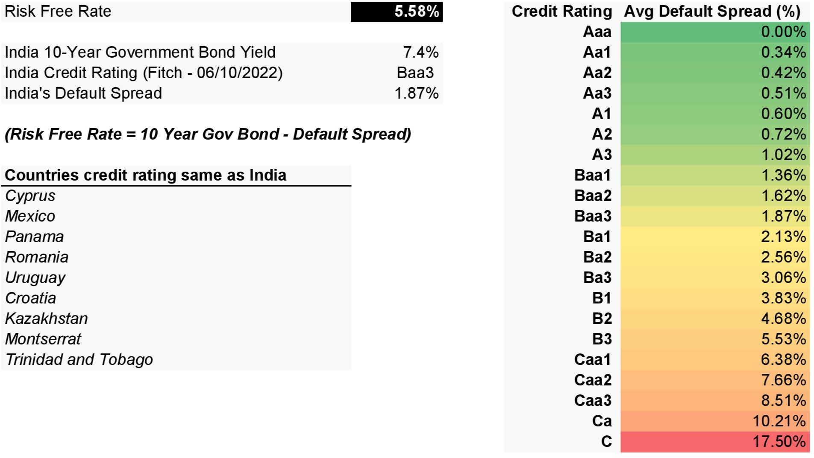
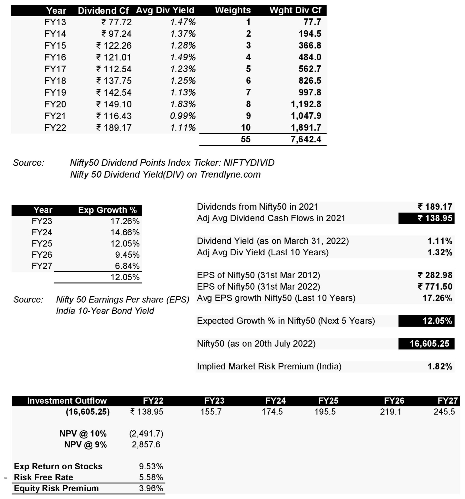
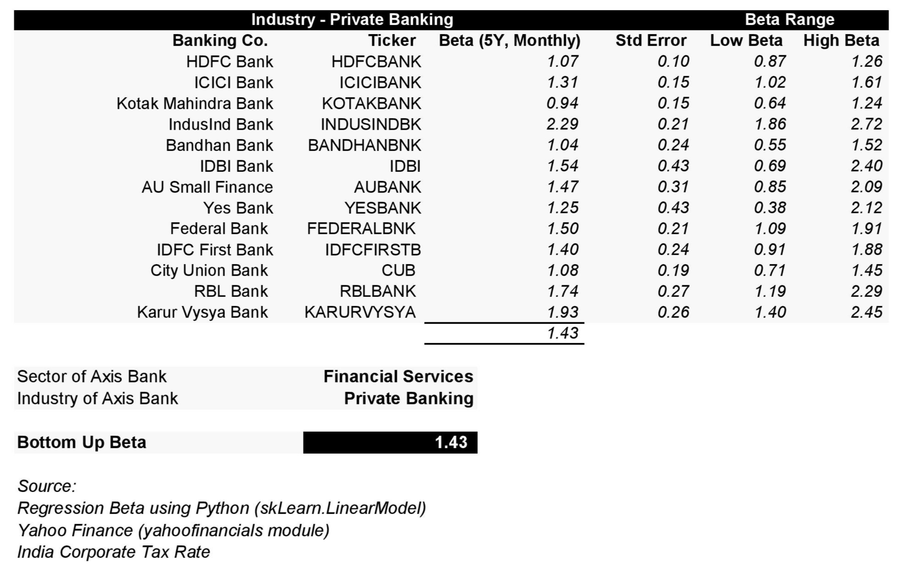
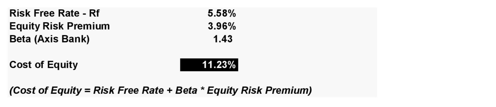
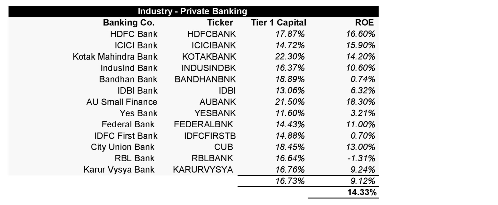
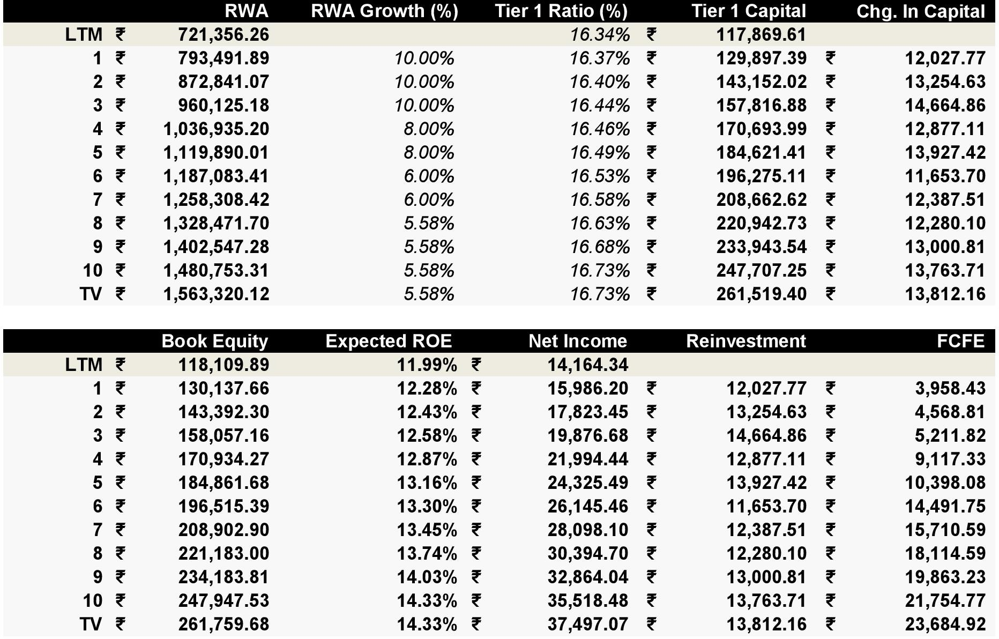
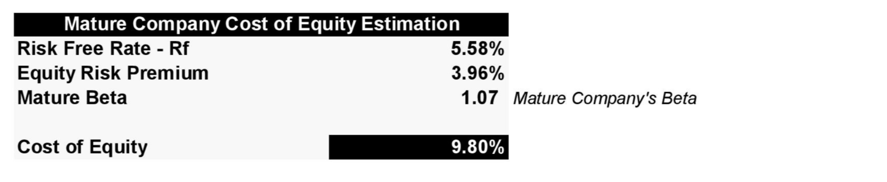
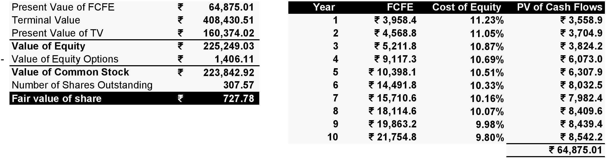

Axis Bank - Third Largest Private Bank in India
Axis Bank is involved in the entire spectrum of financial services to customer segments covering Large and Mid-Corporates, MSME, Agriculture and Retail Businesses. The credit growth is expected to hit 10% in 2022-23 and bank credit stood at ₹116.8 lakh crore (US$ 1.56 trillion) on 31st December 2021 (Source: RBI). Axis Bank earns retail fees from various mediums. Retail cards account for 22% of fees        
Axis Bank has 70% of new savings accounts were sourced through tab banking in FY22. 78% credit cards issued digitally. The bank has a 15% share in UPI transactions, and more than 31 crore customer VPAs registered as on 31 March, 2022
Axis Bank is the 3rd largest private sector bank in India. Their Tier 1 Capital Ratio is 16.34% in FY22 while the industry's Tier 1 Capital Ratio is 16.73%. The tier 1 capital ratio is the equity capital and disclosed reserves divided by its total risk-weighted assets. It is a key measure of a bank's financial strength that has been adopted as part of the Basel III Accord on bank regulation.
I have done Equity valuation for Axis Bank. My discount Rate is going to be the Cost of Equity and my cash flows are going to be based on Free Cash Flow to Equity (FCFE). Why not FCFF? Because Debt is raw material to banks.
India's Risk Free Rate
I start my DCF valuation off by finding out the Risk Free Rate(Rf). As my nominal cash flows are going to be estimated in INR. My discount rate or cost of capital is going to match INR too.
My basis to find the risk free rate of India is to take 10 Year Government Bond Rate and substract the Default Spread. Fitch's Credit Rating for India as on June 10, 2022 was Baa3. The default spread at Baa3 is approximately 1.87%. India's 10 Year Government Bond Yield was 7.446% when I did my valuation.
Risk Free Rate for India comes out to be 5.58%
Equity Risk Premium
Note: The calculations are based on Nifty50 and Nifty50 Dividend Points Index. Buybacks are not considered into the calculation of Equity Risk Premium.
To find out Equity Risk Premium, I used Dividend Discount Model on Nifty50 Index to find out what an investor would earn from the benchmark. I projected out 5 years of expected dividends based on growth rate and dividends of the index in last 10 years. Expected Growth Rate of 12.05% and Dividend CashFlows of ₹138.95.
These numbers might be low for some people because the actual dividends from Nifty50 in 2021 was ₹189.17. I do understand that but I believe normalization of numbers was neccessary as 2021 was one of the best bull runs in history. The danger of overestimating the market for the next 5 years might be too much in my valuation.
Expected Return on Nifty50 Index comes out to be 9.61% and after substracting Risk Free Rate (Rf), we get Equity Risk Premium of 3.96%.
Beta - Relative Risk
Axis Bank operates in Private Banking Industry. I took industry average regression beta of private banks as a beta for Axis Bank. The Regression Beta is calculated based on monthly returns on 5 years time period. I used Python SciPy Module for the task. The Beta, that I come up with is 1.43
Cost of Equity
We have all the ingredients to find out Cost of Equity. Cost of Equity is the Risk Free Rate added Beta times the Equity Risk Premium. The cost of Equity is going to be our discount rate as we are doing an equity (FCFE) valuation of Axis Bank. We get Cost of Equity of 11.23%.
Industry Numbers (Tier 1 Capital and Return on Equity)
Axis Bank is already a big player in the private banking industry. So, guess what, there numbers are very much aligned with the industry numbers. I could have valued the terminal value and discounted it back. It wouldn't have made much of a difference in valuation. But, they are growing their Risk Weighted Assets (RWA) more than inflation rate. That means there is still some growth left in Axis Bank (reaching HDFC Bank based levels) and based on the fact that India is still a growing economy.
Below I have taken the average ROE (Return on Equity) based on top 4 private banks (excluding Axis Bank) and main competitors of Axis Bank. I believe it's a more reliable number rather than taking an average ROE of all private banks.
Future Cash Flows (10 Years)
So, there is a different way to find out the future cash flows in case of banks. My story about the Axis Bank Ltd valuation is that they will keep improving their Risk Weighted Assets (RWA) upto HDFC Bank levels.
According to India Ratings & Research (Ind-Ra), credit growth is expected to hit 10% in 2022-23 which will be a double-digit growth in eight years. According to the RBI, bank credit stood at Rs. 116.8 lakh crore (US$ 1.56 trillion) on 31st December 2021.
The Assumptions:
1. Axis Bank's Risk Weighted Assets will grow by 7.46% over the next 10 years.
2. Axis Bank's will maintain it's Tier 1 capital ratio to about 16.73%.
3. By 2030, Axis Bank will improve it's ROE from 11.99% to 14.33% (industry average).
After gauging the industry numbers, the next question is the future revenues. Wait, revenue is messed up number in banks. So we would take their risk weighted assets of ₹721,356.26 crores as an alternative. We need to know how Axis Bank will grow it's risk weighted assets in the next 10 years. Given that, Axis Bank is still growing it's RWA in double digits. We cannot increase their RWA by inflation rate. So, I used a proxy!
HDFC Bank is a top private bank in India with risk weighted assets close to ₹14 lakh crores. So, I forecasted Axis Bank to get to that level of risk weighted assets in the next 10 years. I made the RWA Growth Rates to get to that end number.
The Tier 1 Capital is 16.34% of the risk weighted assets in FY22. I improved it to 16.73% (industry average). Tier 1 Capital is a regulated number by RBI and it reflects the bank strength. If a bank wants to grow, they would need to increase their Tier 1 Capital. Increase in Tier 1 Capital means a bank can provide more credit to customers from it's deposits.
If a bank wants to improve it's Tier 1 Capital, they would either need to improve it's Tier 1 Capital Ratio (improve efficiency) or raise more capital via equity or debt to improve Risk Weighted Assets. Bottom Line is, Change in Tier 1 Capital is nothing but reinvestment in the banking business.
Book Value of Equity is an irrelevant number in non financial firms. But, in financial service firms, it's a important number and is regulated by RBI. Every reinvestment in regulatory capital (Tier 1 Capital) increases the book equity of a bank.
We have reinvestment in regulatory capital and net income (Book Equity divided by Expected ROE). We subtract the reinvestment from net income to arrive at Free Cash Flow to Equity (FCFE).
Terminal Value
So, we have next 10 years of future cash flows. Now, the question is what happens after 10 years. Let's get some logical things out of the way:
1. Axis Bank Ltd will land to a mature cost of equity of 9.80%.
2. They cannot outgrow the economy, which means Axis Bank grows at 4% till perpetuity.
The Growth Rate in perpetuity is 4%. Why? Economy's growth rate is a combination of mature companies and young growth companies. It's a good assumption to grow an economy on it's risk free rate (5.58%). My assumption dictates that 4% of that growth comes from mature companies and rest 1.58% comes from young growth companies.
With all numbers in my palm, I calculate the Terminal Value, which comes out to be ₹408,430.51 crores.
Fair Value of Share
Let's mop the final values. The Present Value of future cash flows comes out to be ₹64,875.01 crores and Present Value of Terminal Value is ₹160,374.02 crores. We get the Value of Equity of ₹225,249.03 crores. Fair Value of Equity Option Price of ₹318.42 which I calculated based on Black Scholes Option Pricing Model. Thus, the value of equity options are Option Price multiplied by number of outstanding options (which are 4.42 crores options). The Value of Equity Options comes out to be ₹1,406.11 crores.
The Value of Common Stock is divided by number of shares outstanding of 307.54 crore to get a fair value of share, which is ₹727.78 per share. Axis Bank's stock is trading at ₹715.55 per share on July 21, 2022.
Thank you! Check out my valuation by downloading the DCF Axis Bank's Analysis below.